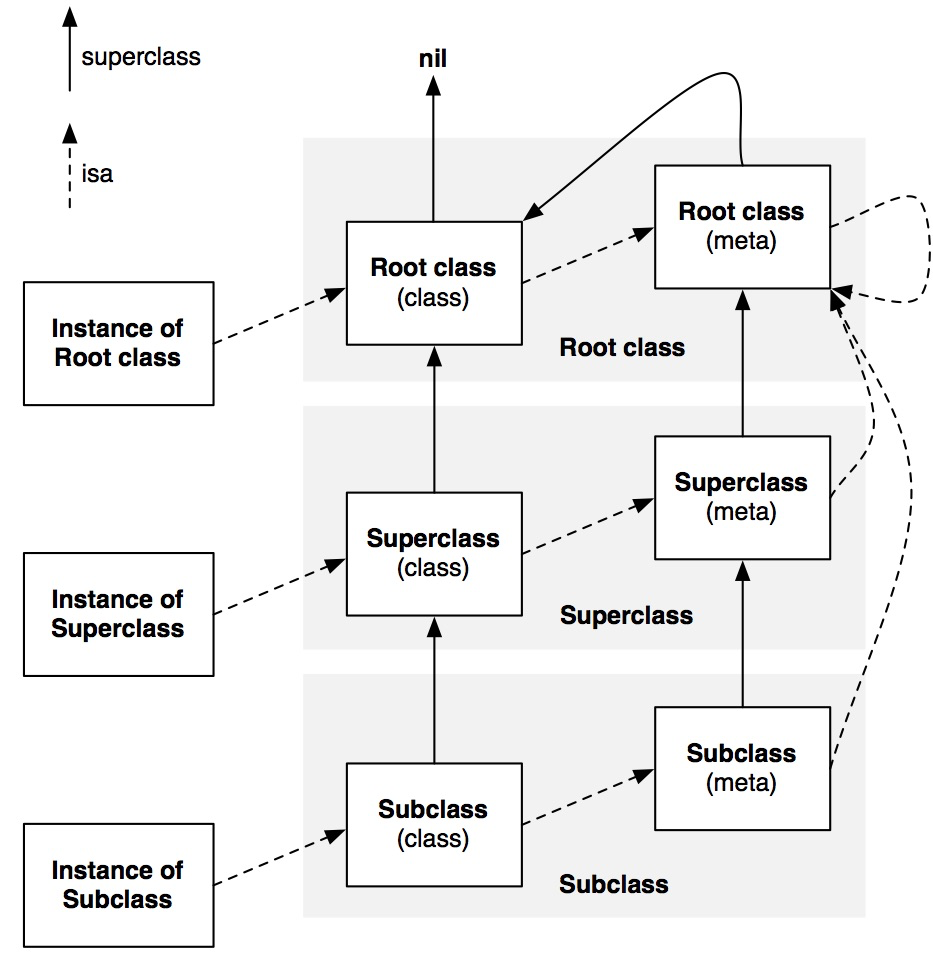

修饰符
- @property 自动生成属性 setter 和 getter 方法的声明，自动生成对应的实例变量 (下划线 + 属性名)
- @synthesize 生成实例变量（开发人员可设置）及属性 setter 和 getter 方法的声明。
- @dynamic 实例变量，属性 setter 和 getter 方法由用户自己实现，不自动生成，
当属性是只读属性，但是重写了 getter 方法，系统不会自动生成成员变量。当属性可读可写，同时重写了 setter/getter 方法，系统不会为你自动生成成员变量，但是如果只重写其中一个，系统还是会自动生成。
@property 有两个对应的词，一个是 @synthesize，一个是 @dynamic。如果 @synthesize 和 @dynamic 都没写，那么默认的就是 @syntheszie var = _var; （自动合成的）。正常情况下，我们都是使用自动合成的，一般用不上 @synthesize 及 @dynamic。
什么情况下需要使用 @synthesize 呢？
- 修改生成的成员变量名字；
- 重写了只读属性的 getter 时；
- 同时重写 setter 和 getter 时；
- 实现了带有 property 属性的 protocol；
怎么用呢？
1 | // .h文件 |
@property 属性修饰符
setter、getter
1 | @property (nonatomic, readonly, getter=isFinalized) BOOL finalized; |
内存管理
- retain 属性必须是 objc 对象，此时输入会增加对象的引用计数加 1，MRC 模式下使用
- strong 表示只要该属性一直指向某个对象，这个对象就不会被销毁，与 retain 效果一样，在 ARC 模式下使用
- copy 属性必须是 objc 对象，并遵守了 NSCopying 协议；在赋值时使用传入一份拷贝，拷贝工作由 copy 方法执行，将指向新的内存地址，常常用于 (NSArray,NSDictionary,NSString)，释放旧对象
- assign 简单直接赋值，不更改索引计数，适用简单数据类型（如 NSInteger,double,bool）。也可以修改对象，但是对象释放后，指针地址还存在没有置为 nil，造成野指针
- weak 表示只是指向对象，不隐式发送 retain, 指向对象一旦被销毁就会自动 nil 化
- __unsafe_unretained 功能几乎等同于 weak, 但是对象被销毁不会自动 nil 化， 成了野指针
当修饰可变类型的属性时，如 NSMutableArray、NSMutableDictionary、NSMutableString，用 strong。
当修饰不可变类型的属性时，如 NSArray、NSDictionary、NSString，用 copy。
读写权限
- readwrite 可读可写，会生成 getter 和 setter 方法
- readonly 是只能读取，只会生成 getter 方法，不会生成 setter 方法，在值不想被外界修改时使用
原子性
- nonatomic 非原子性，与 atomic 是相反的
- atomic 原子性，在多线程的环境下是有必要的，会在 setter 里加锁，保证线程安全, 效率降低，底层加锁的方式为 spinlock_t 自旋锁来实现的，在 iOS10 之后，底层换成了
os_unfair_lock
atomic 不是一定线程安全的，如果一个对象的改变不是直接调用 getter/setter 方法，而是直接对对象内部属性修改、字符串拼接、数组增加和移除元素等操作，就不能保证这个对象是线程安全的。
允许为空，iOS9 新关键字，用于引用类型
- nullable/_Nullable/__nullable 告诉编译器表示值可以空
- nonnull/__nonnull/_Nonnull 表示不可以为 nil，NULL， 不遵守规定编译器会警告
- null_resettable get 不能返回空, set 可以为空，如果使用，必须重写 set 或者 get 方法，处理传递值为空的情况
- _Null_unspecified 不确定是否为空
1 | // nonnull |
关于 ARC 下，不显示指定属性关键字时，默认关键字：
- 基本数据类型：atomic readwrite assign
- 普通 OC 对象： atomic readwrite strong
@import、#import、 #include、@class
#include
#include 是 C/C++ 导入头文件的关键字；
- ＃include <>：引用系统文件，它用于对系统自带的头文件的引用，编译器会在系统文件目录下去查找该文件。
include “ “：用户自定义的文件用双引号引用，编译器首先会在用户目录下查找，然后到安装目录下查找，最后在系统文件中查找。
这个结论对
#import同样有效。
#include这种形式的本质就是将导入的.h 文件直接拷贝过来，并且有重复引用问题。
比如类 A、B 都同时引用了 C，然后类 D 又同时引用类 A、B，这时类 D 就会导入两份 C，造成重复引用，这时编译器就会提示对 C 重复引用的错误，所以你会经常看到这样的模板代码。
1 | #ifndef _CLASSC_H |
#import
#import 是 OC 导入头文件的关键字；
#import相对#include这种形式就会解决上述提到的重复引用问题，因为这种形式内部会做判断，如果已经导入过一次这个.h 文件就不会再次导入这个文件了。
至于
@class
@class 用在 .h 文件中，作用是创建一个向前引用，是解决两个.h 文件互相引用的解决办法。
@class B;
@import
@import是 modulelar 后之后引入模块的关键字；
Extension & Category：分类
extension：扩展
- 可以给类添加成员变量及方法
- 添加的属性和方法是类的一部分，在编译期就决定的。在编译器和头文件的 @interface 和实现文件里的 @implement 一起形成了一个完整的类
- 伴随着类的产生而产生，也随着类的消失而消失
- 必须有类的源码才可以给类添加 extension，所以对于系统一些类，如 NSString，就无法添加类扩展
category：分类
- 给类添加新的方法
- 不能给类添加成员变量
- 通过 @property 定义的变量，只能生成对应的 getter 和 setter 的方法声明，但是不能实现 getter 和 setter 方法，同时也不能生成带下划线的成员属性
- 是运行期决定的，这也是没法添加成员变量的原因，因为在运行期，对象的内存布局已经确定，所以不允许再添加成员变量去修改内存布局。
分类同名方法会优先主类的方法使用。
多个分类中的同名方法会只执行一个, 即后编译的分类里面的方法会覆盖所有前面的同名方法。只调用 category 中方法的原因是：runtime 加载某个类的所有分类数据，将分类中的方法、属性、协议数据都合并到一个大数组中。而由于是倒序的方式遍历，所以后面参与编译的 Category 数据会在数组的前面。最后将合并后的分类数据插入到类原来数据的前面。
怎么调用到原来类中被 category 覆盖掉的方法？ 对于这个问题，我们已经知道 category 其实并不是完全替换掉原来类的同名方法，只是 category 在方法列表的前面而已，所以我们只要顺着方法列表找到最后一个对应名字的方法，就可以调用原来类的方法：
1 | Class currentClass = [MyClass class]; |
[self class] 和 [super class] 区别
两者打印出来的内容相同，我们首先了解一下 class 方法的作用，其就是返回 receiver 的类别。
[self class]就是发送消息 objc_msgSend，消息接收者 self，方法编号 class[super class]本质就是 objc_msgSendSuper，消息的接收者还是 self，方法编号 class。只是调用 objc_msgSendSuper 的时候会直接跳过 self 查找，直接在从 super 出现的在的方法所在的类的父类开始查找进行查找。
load 与 initialize
load
当一个类或者分类被加载到 Objectie-C 的 Runtime 运行环境中时，会调用它对应的 +load 方法。对于所有静态库中和动态库中实现了 +load 方法的类和分类都有效。当应用启动时，首先要 fork 进程，然后进行动态链接。+load 方法的调用就是在动态链接这个阶段进行的。动态链接结束之后，会执行程序的 main 函数。
+load 方法的调用分为两种情况，系统自动调用和手动调用。其中系统自动调用直接通过函数地址调用，而手动调用是使用的消息机制，与正常的方法调用无异。
自动调用 +load 方法执行顺序：
父类与子类：有继承关系的类的 +load 方法的执行顺序，是从基类到子类的；没有继承关系的两个类的 +load 方法的执行顺序是与编译顺序有关的（Build Phases -> Compile Sources 中的顺序）。
类与分类：所有分类的 +load 方法都在所有类 +load 方法之后执行，同时所有分类的 +load 方法的执行顺序与编译顺序有关，与是谁的分类无关，也与一个类有几个分类无关。
1 | @interface Person : NSObject |
- 动态库的 +load 方法都要在主工程的 +load 方法之前执行，多个动态库的 +load 方法的执行顺序编译顺序有关（Link Binary With Libraries 中的顺序）
- 主工程的 +load 方法执行在前，静态库的 +load 方法执行在后。有多个静态库时，静态库之间的执行顺序与编译顺序有关（Link Binary With Libraries 中的顺序）。
手动调用：
当手动调用时，使用的是消息机制，会遵循普通方法的调用方式，比如在 load 方法中手动调用[super load]，其最终会执行到分类中去。
load 方法中我们一般会做 模块注册、方法交换 等操作；
initialize
initialize：当类或子类第一次收到消息时被调用（不管是静态方法还是构造函数还是实例方法），只调用一次，调用方式是通过 runtime 的 objc_msgSend 的方式调用的，此时所有的类都已经装载完毕。
子类和父类同时实现 initialize，父类的先被调用，然后调用子类的；
当子类没有实现 initialize，第一次调用使用子类，也会触发一次父类的 initialize（如果父类之前没有使用，会先调用一下父类的，也就说会调用两次），所以说父类的 initialize 是有可能触发多次的。所以我们一般使用下列方式：
1 | +（void）initialize { |
本类与 category 同时实现 initialize，category 会覆盖本类的方法，只调用 category 的。
load 方法里面可以调用 category 中声明的方法，因为附加 category 到类的工作会先于 +load 方法的执行。
OC 中的 block
OC 中的 block 本质是一个 OC 对象，内部也会有一个 isa 指针。有三种类型。
- 全局 block：NSGlobalBlock ，存储在静态区
- 堆 block：NSMallocBlock ，存储在堆区
- 栈 block：NSStackBlock ，存储在栈区
- 全局 block：在 ARC 及 MRC 下，只要不使用 auto 变量，就是全局 block；copy 之后还是全局 block；
- 栈 block：在 MCR 下使用了 auto 变量，就是栈 block，arc 在有些情况下编译器会自动将栈上的 block 转换为堆 block。
- 堆 block：在 MRC 下将栈 block 进行 copy 操作，就会得到堆 block。堆 block 进行 copy 之后引用计数 +1。
auto 变量是它所在的区域执行完毕, 自动销毁的变量。
ARC 下，栈 block 自动转为堆 block 的情况
- block 作为函数返回值的时候
- 将 block 赋值给 __strong 指针的时候
- block 作为 Cocoa API 中方法名含有 usingBlock 的方法参数时
- block 作为 GCD API 的方法参数时
__block 作用：1、解决 block 内部想修改外部 auto 变量的问题；2、解决循环引用；
对于基本数据类型，一般是存储到栈中的，它有没有可能存在堆上，什么情况下会存储到堆上？
栈和堆都是同属一块内存，只不过一个是高地址往低地址存储，一个从低地址往高地址存储，他们并没有严格的界限说一个值只能放在堆上或者栈上。所以基本数据类型也是可以存储到堆上的。
当该基础类型变量被__block 捕获时，该变量连同 block 都会被 copy 到堆上。
copy / mutableCopy
- 不可变对象调用 copy，不会生成新的对象，因为没有必要。指针指向同一地址即可满足。
- 不可变对象调用 mutableCopy，生成新的对象，因为需要修改而原对象不支持修改。
- 可变对象调用 copy，生成新的对象，因为预期是获得一个不可变对象。
- 可变对象调用 mutableCopy，生成新对象，可变对象的修改不应影响到原对象，所以会生成新对象。
isa 指针
isa 指针是一个联合体，

- 每一个对象本质上都是一个类的实例。其中类定义了成员变量和成员方法的列表。对象通过对象的 isa 指针指向类。
- 每一个类本质上都是一个对象，类其实是元类（meteClass）的实例。元类定义了类方法的列表。类通过类的 isa 指针指向元类。
- 所有的元类最终继承一个根元类，根元类 isa 指针指向本身，形成一个封闭的内循环。
引用计数会存储在 isa 指针上，当引用计数超过 255 时，引用计数会存储在 SideTable 的属性中。